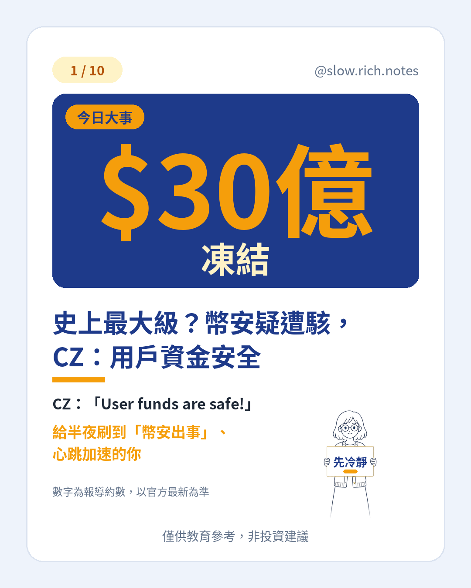
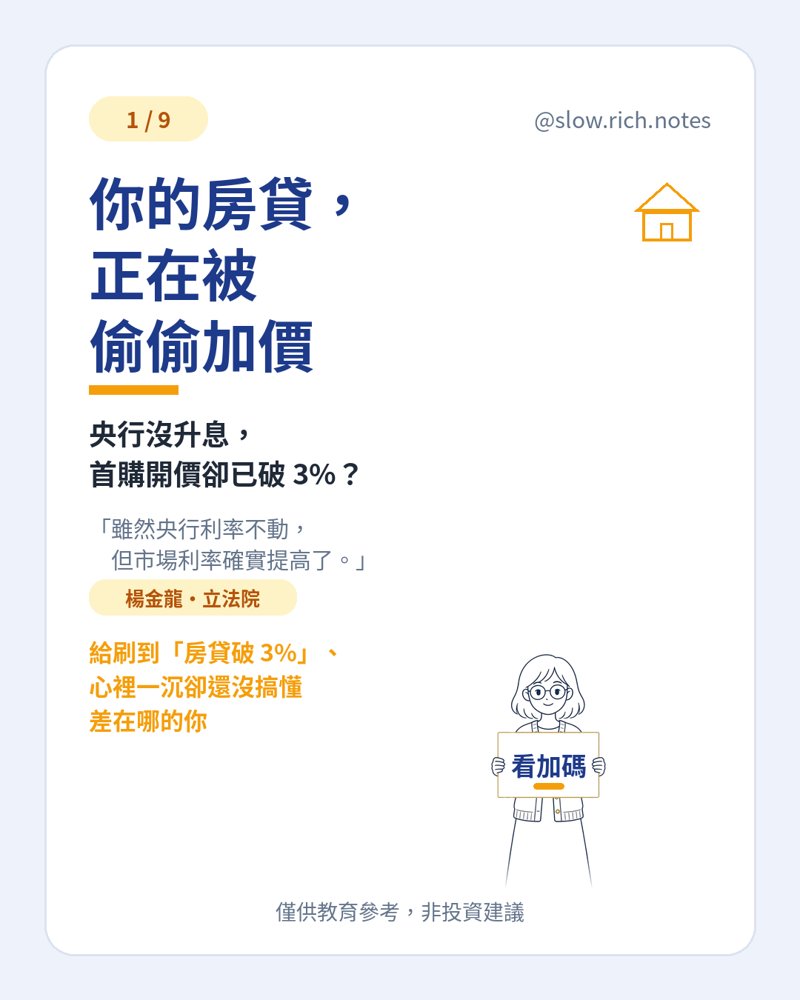
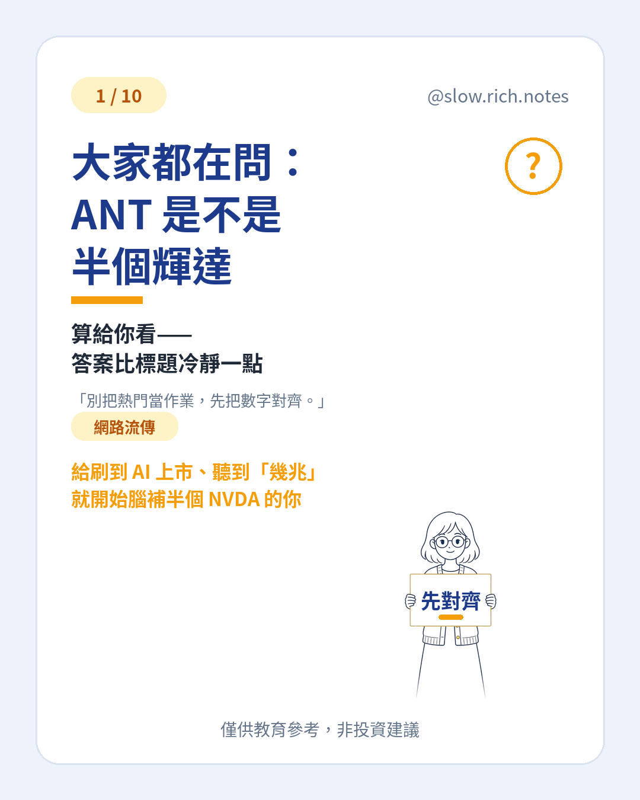

投資新手筆記
把 IG 圖文寫成可以慢慢讀的短文。觀念為主，不報明牌。

新聞史上最大級？幣安疑遭駭，CZ：用戶資金安全
官方凍結約 30 億美元 vs 鏈上估算近 60 億——先分清事實與估算，再看 CZ 與幣安怎麼說。
閱讀 →
新聞你的房貸，正在被偷偷加價
央行沒升息，首購房貸卻有人開到 3% 起？搞懂基準利率＋銀行加碼，再決定要不要重算月付。
閱讀 →
新聞大家都在問：ANT 是不是半個輝達
Anthropic（ANT）上市估值常被說成半個輝達？用私募、路演預期與 Polymarket 首日收盤市值三個錨對齊，結論是還沒到——約三分之一到四成。
閱讀 →觀念把普發一萬變五萬？先算這筆帳
一萬變五萬要多久？用 7%／10%／15% 假設例子算年數；重點是從現在開始存股。預算三讀通過才會發。
閱讀 →觀念少做這個動作，LINE 年底可能被刪
只連 Facebook 且還沒設電話的 LINE，截止台灣時間 2026/12/31 23:59 前請對條件處理；通訊斷了，銀行／券商通知也可能收不到。
閱讀 →名詞一拆八，錢會變多嗎？
新聞常寫 ETF「1 拆 8」。分割是份數變多、單價變低，總額差不多；倍數多半還是預估，要等會議與淨值。
閱讀 →現金流月薪 3 萬，也能慢慢存起來
發薪後餘額歸零，常常不是只差收入。用月薪 3 萬的假設例子，把錢分成生活、緊急預備、還債與保障、未來自己。
閱讀 → 一人公司
一人公司不用面試，先把員工下載下來
一人公司也可以先把工作拆開。工具像一份可複製的工作說明書，不會替你負責；跟理財一樣，先把系統建起來。
閱讀 →新聞油價破 100，你的薪水正在縮水？
油價、通膨、利率、股與債常常連成一條線。看懂是為了少慌，不是為了猜下一根漲跌。便當價格是假設例子。
閱讀 →新手入門也有這些
這幾篇完整版在新手入門，點進去讀——避免與筆記重複。
還沒開始投資？先做好這 3 件事
存好緊急預備金、處理高利率負債、寫下目標，打好地基再學投資。
閱讀 →名詞看不懂財經新聞？這 10 個詞先學起來
股票、債券、ETF、基金、股利、殖利率、本益比、市值、分散、波動，一句話白話說明。
閱讀 →方法定期定額 vs 單筆投入，新手該怎麼想？
兩種投入方式的差別、各自適合誰，以及要先想清楚的事。
閱讀 →觀念股票到底是什麼？用一間飲料店看懂
股票＝公司的一小塊所有權。當股東可能分到股利、股價可能漲，也要承擔虧損風險。
閱讀 →觀念複利：時間是新手最大的優勢
錢會生錢，生出來的錢也會再生錢。同樣本金，差別在時間。
閱讀 →心態新手最常犯的 5 個錯，你中了幾個？
聽明牌、追高殺低、用生活費投資、All in 單一標的、只看報酬不看風險成本。
閱讀 →工具ETF 是什麼？一次看懂
ETF 是一籃子股票（或債券）。分散單一公司風險，但不保證賺，也要看內扣費用。
閱讀 →起步第一次開證券戶？5 步驟懶人包
選券商、準備證件、線上開戶、交割帳戶、先模擬小額。本篇不推薦任何券商。
閱讀 →心態投資前，先問自己這 5 個問題
預備金、資金用途時間、能否承受下跌、是否理解標的、檢視節奏。答得出來再開始也不遲。
閱讀 →新聞外資提款 776 億美元，你的台幣變薄了？
央行報告：外資今年淨匯出約 776 億美元、新台幣貶約 3.23%。用白話講匯率＝尺子在動，對出國、美股與定期定額的影響，不預測漲跌。
閱讀 →